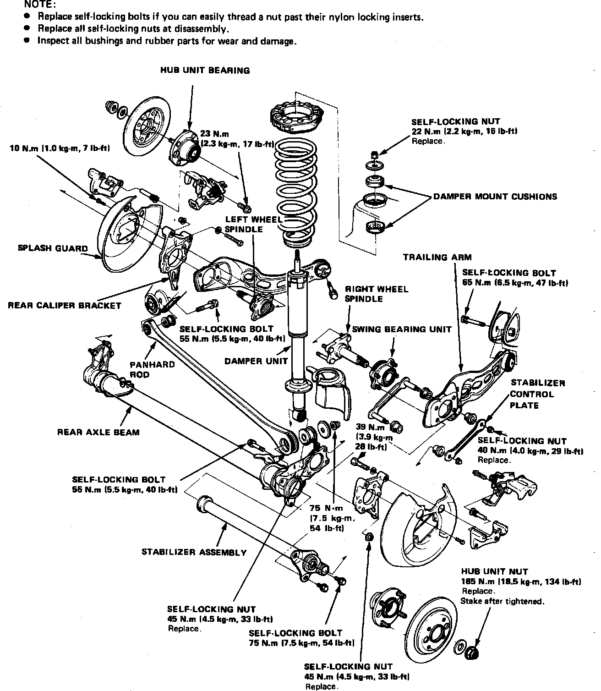
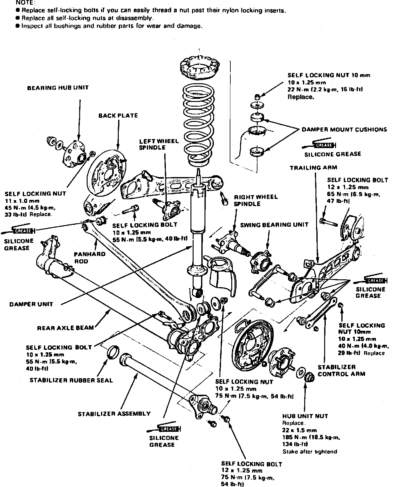

Rear
Fig. 1 Exploded View Of Rear Suspension Components W/disc Brakes:

Fig. 2 Exploded View Of Rear Suspension Components W/drum Brakes:

Fig. 7 Exploded View Of Rear Suspension Components:

1. Raise and support rear of vehicle and remove wheel and tire assembly.
2. Remove brake caliper and brake disc, then the hub cap, hub nut and hub assembly, Figs. 1, 2 and 7.
3. Reverse procedure to install. Torque hub nut to specifications, then stake hub nut against groove in spindle.